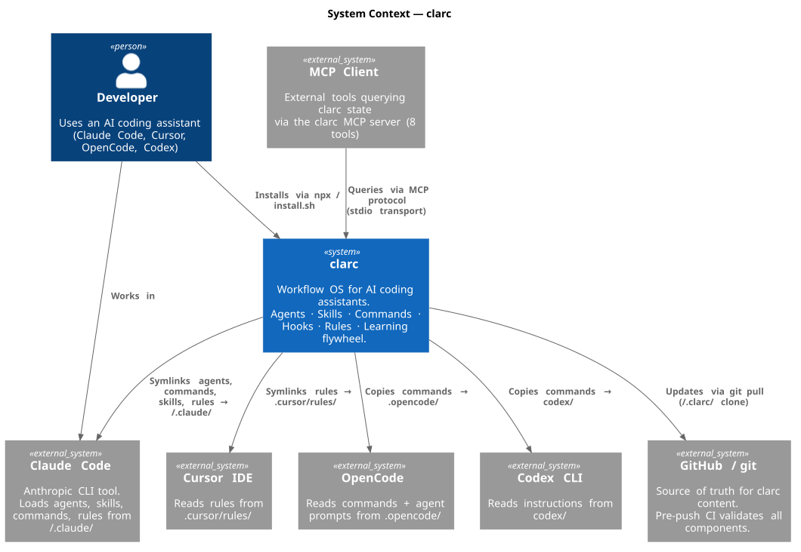
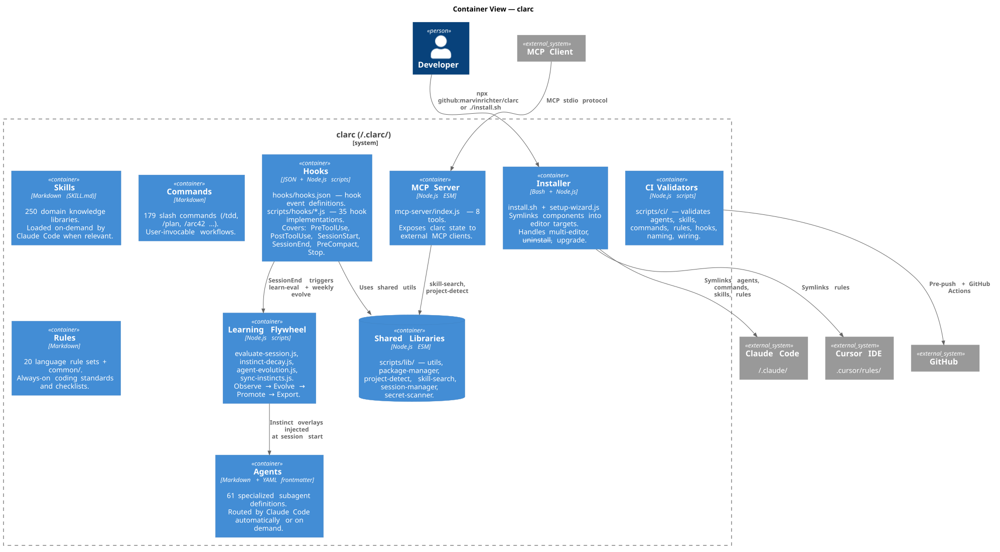
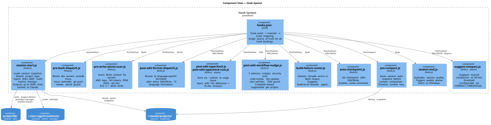
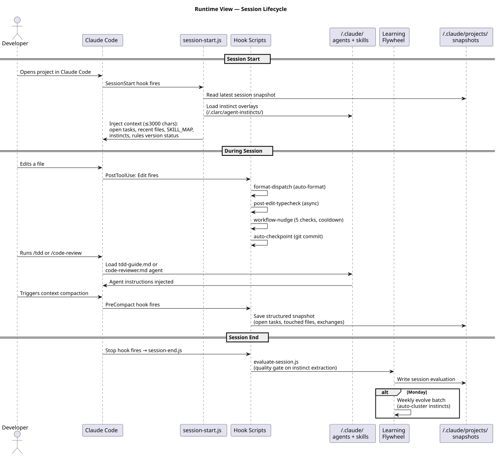
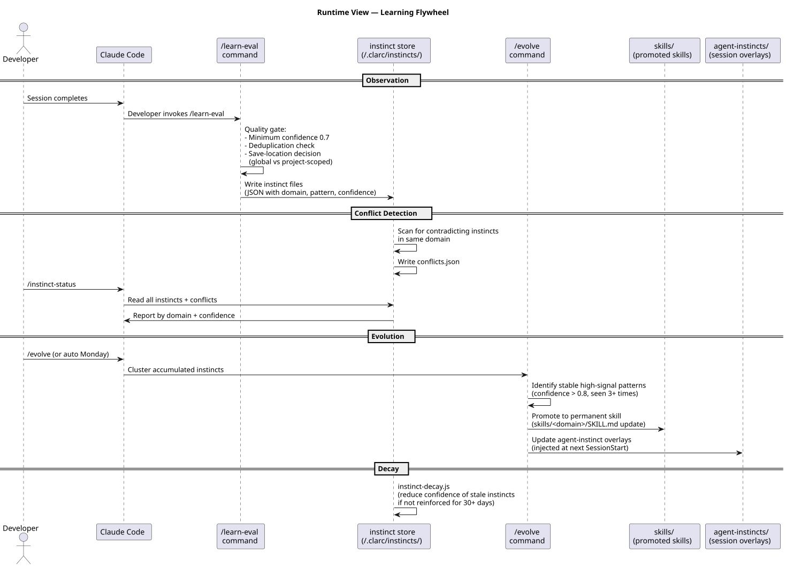
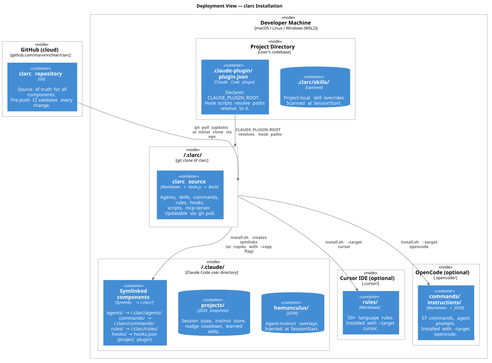

arc42 Architecture Documentation — clarc
clarc v1.0.0 · Workflow OS for AI coding assistants Generated: 2026-03-12 · Render diagrams: PlantUML online or VS Code PlantUML extension
Table of Contents
- Introduction & Goals
- Constraints
- System Scope & Context
- Solution Strategy
- Building Block View
- Runtime View
- Deployment View
- Cross-cutting Concepts
- Architecture Decisions
- Quality Requirements
- Risks & Technical Debt
- Glossary
1. Introduction & Goals
What is clarc?
clarc turns Claude Code (and compatible AI coding assistants) from a reactive chat tool into a structured engineering system. It provides:
- Agents — 62 specialized subagents that delegate planning, review, testing, and debugging
- Skills — 248 domain knowledge libraries loaded on demand
- Commands — 172 slash commands for repeatable engineering workflows
- Hooks — 37 background automations (format, lint, secret scan, budget guard, response dashboard, state persistence)
- Rules — 20 language rule sets always active in every session
- Learning flywheel — session patterns promoted into permanent skills over time
Core Requirements
| # | Requirement | Priority |
|---|---|---|
| R1 | Developer can install clarc in < 5 minutes with a single npx command | Critical |
| R2 | All components symlink into ~/.claude/ without overwriting user's own files | Critical |
| R3 | Works across 4 editors: Claude Code, Cursor, OpenCode, Codex | High |
| R4 | Session state survives context compaction without data loss | High |
| R5 | Learned instincts persist across sessions and improve agent quality over time | High |
| R6 | Every component validated by CI before reaching users | Medium |
Quality Goals
| Quality | Target | Measure |
|---|---|---|
| Correctness | Zero broken cross-references | CI validator (validate-wiring.js) |
| Reliability | Hooks non-blocking; session state always preserved | Async hooks, PreCompact snapshot |
| Security | No secrets in source; no secrets written to disk | pre-write-secret-scan.js |
| Learnability | New developer onboarded in < 10 minutes | /quickstart command |
| Evolvability | System improves from its own usage | Learning flywheel |
| Cost Visibility | User sees cost and tool breakdown after every response | response-dashboard.js Stop hook |
Stakeholders
| Stakeholder | Expectation |
|---|---|
| Individual developer | Faster, more structured engineering work with Claude Code |
| Team lead | Consistent coding standards and review workflows across the team |
| clarc maintainer | Clean component boundaries, CI-validated quality gates |
2. Constraints
Technical Constraints
| Constraint | Reason |
|---|---|
| Node.js ≥ 22 (ESM modules) | All hook scripts use import/export; modern Node.js features required |
| No runtime database | All state lives in flat JSON files (~/.claude/projects/, ~/.clarc/) |
| No network access during hooks | Hooks run synchronously in Claude Code's process; outbound HTTP not viable |
| Markdown-first content | Agents, skills, commands, rules are all plain Markdown — human-readable, git-diffable |
| Symlinks require same filesystem | install.sh --symlink fails across filesystems; use --copy for CI/containers |
Organizational Constraints
| Constraint | Reason |
|---|---|
| MIT License | Open source; no proprietary dependencies in core |
| No Anthropic API key required | clarc runs inside Claude Code — does not call the API directly |
| Single maintainer (pre-launch) | All PRs reviewed by Marvin Richter; no external contributors yet |
3. System Scope & Context

Context summary:
clarc ←→ Claude Code (primary integration via ~/.claude/ symlinks)
clarc ←→ Cursor (rules → .cursor/rules/)
clarc ←→ OpenCode (commands → .opencode/)
clarc ←→ Codex CLI (commands → codex/)
clarc ←→ GitHub (source via git clone; CI validation on pre-push)
clarc ←→ MCP clients (optional: 8 tools via stdio MCP transport)External systems clarc does NOT directly integrate with:
- Anthropic API (runs inside Claude Code, not alongside it)
- Any cloud provider (clarc is a local tool with no cloud backend)
- Any database (flat-file storage only)
4. Solution Strategy
| Decision | Choice | Rationale |
|---|---|---|
| Storage format | Flat Markdown files + JSON | Git-native, human-readable, no database dependency |
| Install strategy | Symlinks into ~/.claude/ | Single git pull updates everything; no re-install |
| Hook implementation | Node.js ESM scripts | Cross-platform (macOS/Linux/WSL2); async support; shared lib |
| Skill format | SKILL.md per directory | Namespace isolation; future: per-skill assets (examples, templates) |
| Agent format | Markdown with YAML frontmatter | Claude Code native; name, description, tools, model, uses_skills |
| Multi-editor | Separate install targets | Claude Code = symlinks; Cursor/OpenCode/Codex = copies |
| Learning | Instinct files → promoted skills | Incremental; quality-gated; no auto-promotion without human review |
| CI | Node.js validators + pre-push hook | Fast, language-native, no Docker required |
5. Building Block View
Level 1 — Container Diagram

Level 2 — Component: Hook System
The Hook System is clarc's most complex container — it coordinates 37 Node.js scripts across 6 event types.

Hook Event → Script Mapping
| Event | Matcher | Script | Purpose | |
|---|---|---|---|---|
| PreToolUse | Bash | pre-bash-dispatch.js | Block dev servers, tmux reminder, push review | |
| PreToolUse | Write | pre-write-secret-scan.js | Block writes with secrets (exit 2) | |
| PreToolUse | Write | doc-file-warning.js | Warn about non-standard doc file paths | |
| PreToolUse | Edit\ | Write | suggest-compact.js | Suggest compaction at 50-tool threshold (async) |
| PreToolUse | Agent | budget-guard.js | Warn/block Agent calls when daily spend exceeds threshold | |
| PreCompact | * | pre-compact.js | Save session snapshot before compaction | |
| PostToolUse | Edit\ | Write | post-edit-format-dispatch.js | Auto-format in 15 languages |
| PostToolUse | Edit | post-edit-typecheck.js | tsc --noEmit (async, debounced) | |
| PostToolUse | Edit | post-edit-typecheck-rust.js | cargo check (async, debounced) | |
| PostToolUse | Edit\ | Write | post-edit-workflow-nudge.js | 5 advisory nudges with cooldown |
| PostToolUse | Bash | build-failure-router.js | Detect compile errors, suggest agent | |
| PostToolUse | Edit\ | Write | auto-checkpoint.js | Git checkpoint for /undo |
| PostToolUse | Agent | agent-tracker.js | Track agent invocation frequency | |
| SessionStart | * | session-start.js | Load context, skills, instincts | |
| SessionEnd | * | session-end.js | Evaluate session, log per-tool cost, trigger weekly evolve | |
| Stop | * | response-dashboard.js | Show per-response tool usage, agents, and cost estimate | |
| Stop | * | check-console-log.js | Warn if console.log found in modified JS/TS files |
Shared Libraries (scripts/lib/)
| Module | Purpose |
|---|---|
utils.js | File I/O, path helpers, JSON read/write, logging |
package-manager.js | Detect npm/pnpm/yarn/bun; project-level override |
project-detect.js | Identify tech stack from lock files and config |
skill-search.js | Keyword + domain search across skills/ (used by MCP + CLI) |
session-manager.js | Read/write session snapshots in ~/.claude/projects/ |
session-aliases.js | Human-readable session name aliases |
secret-scanner.js | Regex patterns for AWS keys, GH tokens, PEM, Slack, api_key |
6. Runtime View
Scenario 1 — Session Lifecycle

Key invariants:
session-start.jsinjects at most 3000 chars to avoid context wastepre-compact.jsalways runs synchronously before any compaction — no snapshot loss- All PostToolUse hooks are non-blocking (async) except
pre-write-secret-scan.js(must block to abort writes)
Scenario 2 — Learning Flywheel

Quality gates:
/learn-evalrequires minimum confidence 0.7 before persisting an instinct/evolvepromotes only instincts with confidence > 0.8 seen ≥ 3 times- Contradicting instincts in the same domain go to
conflicts.jsonfor human resolution instinct-decay.jsreduces confidence of instincts not reinforced for 30+ days
Scenario 3 — CI Validation Pipeline (pre-push)
git push
└─ scripts/pre-push.sh
├─ ESLint → scripts/ code quality
├─ markdownlint → all *.md files
├─ validate-agents.js → frontmatter, required fields, tool lists
├─ validate-hooks.js → hooks.json schema + script existence
├─ validate-commands.js → description frontmatter, After This section
├─ validate-skills.js → SKILL.md existence, frontmatter, size ≤ 600 lines
├─ validate-rules.js → rule format contract (≤ 80 lines, checklist)
├─ validate-wiring.js → uses_skills references resolve to existing skills
├─ validate-naming.js → kebab-case naming, no reserved names
└─ tests/run-all.js → unit + artifact tests (~4000 assertions)7. Deployment View

Installation Modes
| Mode | Command | Use case |
|---|---|---|
| Interactive wizard | npx github:marvinrichter/clarc | First-time users |
| Explicit language | npx github:marvinrichter/clarc typescript | Scripted setup |
| Copy mode | npx github:marvinrichter/clarc --copy typescript | CI, containers, cross-filesystem |
| Cursor target | npx github:marvinrichter/clarc --target cursor typescript | Cursor IDE |
| OpenCode target | npx github:marvinrichter/clarc --target opencode typescript | OpenCode |
| Codex target | npx github:marvinrichter/clarc --target codex | Codex CLI |
| Check | npx github:marvinrichter/clarc --check | Verify installed rules are current |
| Doctor | npx github:marvinrichter/clarc doctor | Full health check |
File System Layout After Install
~/.clarc/ ← git clone (source of truth)
│ agents/, skills/, commands/
│ hooks/, rules/, scripts/
│ mcp-server/, install.sh
│
~/.claude/ ← Claude Code user directory
│ agents/ → symlinks → ~/.clarc/agents/*.md
│ commands/ → symlinks → ~/.clarc/commands/*.md
│ rules/ → symlinks → ~/.clarc/rules/**/*.md
│ projects/ → session snapshots (JSON), instinct store
│ homunculus/ → agent-instinct overlays
│
<project>/.claude-plugin/ ← per-project plugin
│ plugin.json ← declares CLAUDE_PLUGIN_ROOT
│
<project>/.clarc/ ← optional per-project overrides
skills/ ← project-local skills
hooks-config.json ← suppress/configure hook nudges8. Cross-cutting Concepts
8.1 Secret Detection
Two-layer defense:
- Pre-write:
pre-write-secret-scan.js— blocks the Write tool (exit 2) if content matches: AWS AKIA keys, GitHub tokens (ghp/gho/ghu/ghs/ghr), PEM headers, Slack xox\*,api_key=,token= - Pre-push:
pre-bash-dispatch.jsscans git diffs ongit commitcommands
File extension allowlist skips binary/generated files (.png, .jpg, .wasm, .lock, .sum).
8.2 Error Handling in Hooks
All hooks follow the same pattern:
- Exit 0 → success, continue
- Exit 2 → block the tool call (Write/Bash)
- Any exception → caught silently, exit 0 (never block user work due to hook failure)
- Async hooks → fire-and-forget; errors logged but never block
8.3 Observability
hook-logger.js— writes structured JSON tohooks.logper hook invocationscripts/hooks-summary.js— analyzeshooks.log;--heatmapshows most-triggered hooks;--errorsshows failuresagent-tracker.js— tracks agent invocation frequency
8.4 Validation Strategy
| Boundary | Validator |
|---|---|
| User input (secrets) | secret-scanner.js at write time |
| Component format | CI validators in scripts/ci/ at pre-push |
| Cross-references | validate-wiring.js + validate-agent-skill-refs.js |
| File size | Skill max 600 lines (CI hard limit) |
| Naming | validate-naming.js — kebab-case, no reserved Claude Code commands |
8.5 Immutability Convention
All hook scripts and shared libraries follow immutable data patterns — functions return new objects rather than mutating inputs. Mutable state is limited to file I/O (session snapshots, cooldown state).
8.6 Context Window Management
session-start.jscaps context injection at 3000 characterssuggest-compact.jsnudges manual compaction at 50 tool calls (configurable)pre-compact.jsalways saves state before compaction so nothing is lost
8.7 Cost Management & Budget Controls
clarc includes a three-layer cost management system:
Per-response dashboard (response-dashboard.js — Stop hook):
- Fires after every Claude response
- Parses
transcript_pathJSONL to find the last human turn as response boundary - Counts all tool calls in assistant turns after that boundary
- Resolves agent model tier from agent frontmatter
- Outputs a 3-line formatted summary to stderr (non-blocking):
`` ──────────────────────────────────────────────────────── tools: Read×5 Edit×3 Bash×2 Agent×1 agents: typescript-reviewer [sonnet] cost: ~$0.08 · ~9.5k tokens (est.) ──────────────────────────────────────────────────────── ``
- Suppressible via
CLARC_RESPONSE_DASHBOARD=falseor.clarc/hooks-config.json
Daily budget guard (budget-guard.js — PreToolUse/Agent):
- Fires before every Agent tool call (agents are 20–40× more expensive than simple tools)
- Reads
~/.clarc/cost-log.jsonlto sum today's accumulated estimated spend - Warns via stderr if spend exceeds
CLAUDE_COST_WARN(default $5) - Blocks (exit 2) if spend exceeds
CLAUDE_BUDGET_LIMIT(default $20, 0 = disabled) - Cost estimates: ±50–100% accuracy; ground truth:
console.anthropic.com
Session cost log (session-end.js — SessionEnd hook):
- Appends one JSON entry to
~/.clarc/cost-log.jsonlper session - Uses per-tool token weight table (Agent=8k, Read=1.5k, Bash=400, Grep=300, ...)
- Accurate within ±50–100%; drives
budget-guard.jsdecisions next session
Per-tool weight table:
| Tool | Input tokens | Output tokens |
|---|---|---|
| Agent | 8,000 | 2,000 |
| WebFetch | 2,000 | 100 |
| Read | 1,500 | 50 |
| Edit | 600 | 150 |
| Write | 500 | 100 |
| WebSearch | 800 | 100 |
| Bash | 400 | 200 |
| Grep | 300 | 100 |
| Glob | 200 | 50 |
Model tier routing (summarizer-haiku agent):
- Haiku-tier agent (10–15× cheaper than Sonnet) for text summarization, classification, boilerplate generation
- Orchestrator routes to
summarizer-haikufor subtasks that don't require reasoning - Never used for code review, security analysis, or architecture decisions
9. Architecture Decisions
No ADRs in docs/decisions/ yet. Key implicit decisions are captured in Section 4.
Decisions pending formalization:
- Choice of symlinks over copies as default install strategy
- Markdown as the agent/skill/command format (vs. YAML-only or JSON)
- Single flat-file storage (vs. SQLite or local server)
- Node.js ESM for hooks (vs. Python or Bash)
Run
/explore <decision-name>to generate an ADR, then/arc42 decisionsto rebuild this index.
10. Quality Requirements
| Scenario | Stimulus | Response | Measure |
|---|---|---|---|
| Install | Developer runs npx github:marvinrichter/clarc | Installation completes, all symlinks healthy | < 60s on clean machine |
| Secret leak prevention | Developer writes file with AWS key | Write is blocked with explanation | Exit code 2 before file is written |
| Context compaction | Claude Code compacts conversation | Session state fully preserved | All tasks + touched files in next session |
| Hook failure | A hook script throws an unexpected error | User work continues uninterrupted | Hook exits 0, error logged |
| Component update | Developer runs git pull in ~/.clarc/ | All symlinks immediately reflect new content | Zero additional steps |
| Skill search | MCP client queries skill_search | Matching skills returned ranked by relevance | < 100ms |
| Cost guard | Daily Agent spend exceeds CLAUDE_BUDGET_LIMIT | Agent call is blocked with spend summary | Exit code 2 before agent is spawned |
| Response dashboard | Claude finishes a response | Tool usage, agents used, and cost estimate shown | < 50ms parsing; non-blocking |
11. Risks & Technical Debt
Known Risks
| Risk | Likelihood | Impact | Mitigation |
|---|---|---|---|
| Claude Code hook API changes | Medium | High | Hooks are thin wrappers; migration is localized to hooks.json + scripts/hooks/ |
| Symlink conflicts on Windows (non-WSL2) | High | Medium | --copy mode available; documented in README |
| Instinct quality degradation | Low | Medium | Quality gate (confidence ≥ 0.7) + decay mechanism |
| Skill corpus size growth | Low | Low | CI hard limit 600 lines/skill; split pattern established |
| MCP SDK version drift | Low | Low | @modelcontextprotocol/sdk is optional dependency |
Known Technical Debt
| Item | Location | Severity |
|---|---|---|
suggest-compact.js counter race condition | scripts/hooks/suggest-compact.js | Low — advisory only, no data loss |
| Hook matchers can't filter by file extension natively | hooks/hooks.json | Low — mitigated by early-exit guards in scripts |
| No integration tests for install.sh | tests/integration/ | Medium — manual testing required on each release |
docs/decisions/ has no ADRs yet | docs/decisions/ | Low — implicit decisions undocumented |
12. Glossary
| Term | Definition |
|---|---|
| Agent | A specialized Claude Code subagent defined in a Markdown file with YAML frontmatter. Invoked automatically by trigger rules or explicitly via --subagent_type. |
| Skill | A domain knowledge library in skills/<name>/SKILL.md. Loaded on-demand by Claude Code when the context matches. Not always-on (unlike rules). |
| Command | A user-invocable slash command (e.g. /tdd, /plan) defined in commands/<name>.md. Expands to a full prompt when invoked. |
| Hook | A shell command triggered by Claude Code events (PreToolUse, PostToolUse, SessionStart, Stop, PreCompact). Implemented as Node.js scripts in scripts/hooks/. |
| Rule | An always-on guideline loaded into every session. Defines what to do (standards, checklists). Skills show how to do it. |
| Instinct | A pattern learned from sessions via /learn-eval. Stored as JSON with domain, confidence, and reinforcement count. Can be promoted to a permanent skill via /evolve. |
| SKILL_MAP | A mapping from detected tech stack (languages, frameworks) to relevant skill names. Injected at session start. |
| CLAUDE_PLUGIN_ROOT | Environment variable set by .claude-plugin/plugin.json that resolves hook script paths relative to the clarc installation. |
| clarc-self-dev-nudge | The hook nudge that fires when .md/.json files in agents/, skills/, or commands/ are modified — suggests the appropriate review agent. |
| Continuous learning flywheel | The observe → extract → quality-gate → store → evolve → promote cycle that improves clarc from its own usage. |
| MCP | Model Context Protocol — Anthropic's standard for exposing structured tools to AI models. clarc implements an optional MCP server with 8 tools. |
| Worktree isolation | A multi-agent coordination pattern where each agent runs in a separate git worktree to prevent file conflicts. |
| ADR | Architecture Decision Record — a document capturing the context, options, and rationale for a significant technical choice. |
| CLARC_ROOT | The root directory of the clarc installation (~/.clarc/ or the local development repo). Used by hooks to resolve component paths. |
| budget-guard | A PreToolUse/Agent hook that reads ~/.clarc/cost-log.jsonl and warns or blocks Agent calls if daily estimated spend exceeds configured thresholds. |
| response-dashboard | A Stop hook that parses the session transcript to produce a per-response summary of tools used, agents invoked, and estimated token cost. |
| cost-log.jsonl | An append-only JSONL file at ~/.clarc/cost-log.jsonl logging per-session estimated token costs. Used by budget-guard.js to compute daily spend. |
| summarizer-haiku | A Haiku-tier agent (10–15× cheaper than Sonnet) for text summarization, classification, and boilerplate — routes cheap subtasks away from expensive models. |